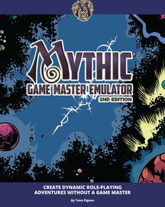

The settings and genres you want to play in. Leave them all unticked and every game is considered.
"No GM needed" shows only games your group plays without a game master (shared or rotating narration, oracles).
Only the questions you answer count: move a slider to switch it on. Set how much you care with its importance (0 ignores it). Then hit GO.
Best matches
Top 15
Pick your themes and set the sliders, then:

Want to play without a GM? Pair any game with an oracle. Mythic Game Master Emulator answers your yes/no
questions and throws in twists, so a group or a solo player can run any TTRPG (not just the ones below) without a game master.